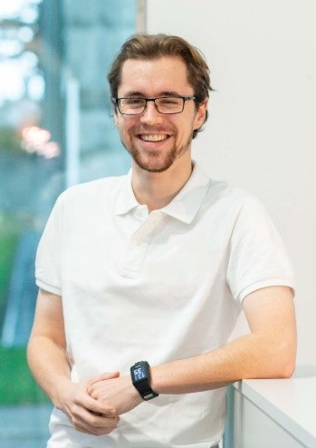

Curiculum Vitae
Personal Information
- Name: Sven Kiefer
- E-Mail: kiefersv.mail@gmail.com
- Nationality: Swiss
- Work address: Celestijnenlaan 200d, 3001 Leuven
- Personal address: On request

Education
| 10/2020 – present | Ph.D. in Astrophysics,
KU Leuven, Belgium, OEAW & TU Graz, Austria
Marie Curie ITN: CHAMELEON Topic: "Cloud formation on 3D exoplanets" |
| 09/2018 – 07/2020 | MSc. Physics,
ETH Zurich, Switzerland
Focus: Astrophysics Master’s thesis: "Spectral characterization of companions around Young Suns", conducted at Leiden University, Netherlands Additional: Phenomenology of Particle Physics |
| 09/2015 – 09/2018 | BSc. Physics,
ETH Zurich, Switzerland
Thesis: "To Measure a Transit with a 0.5m Telescope" |
Languages
| Native | German |
| Fluent | English (TOFEL 111/120) |
| Non-Fluent | French, Dutch |
Coding
| Advanced | Python, Fortran 77/90, LaTeX |
| Intermediate | C++, C#, Matlab |
| Basics | Java, Arduino, HTML |
Telescope Experience
| Mercator – HERMES | Service observations of the Mercator telescope on La Palma using the HERMES instrument.
Observation time: 17 days |
| 0.5m Telescope | Project: To Measure a Transit with a 0.5m Telescope
Operating a professional telescope and developing algorithms for data analysis to detect exoplanets using the transit method |
| Amateur Telescopes | Project: The Life, Death and Remnants of Stars
Observation planning, operating a telescope at 3000m and analysis of CCD data Telescopes used: C8 Celestron, C14 Celestron, Skywatcher Explorer 150 PDS |
Extracurricular Activities
| 01/2020 – present | Founder and project manager of the MEME, Leiden University, Netherlands
The Massive Exoplanet MEME Exhibition is an arts exhibition with the goal to entertain and inspire (high school) students and scientists. Skills: organising public outreach events incl. educational material |
| 11/2019 – 09/2020 | Payload team leader of ARIS, ETH Zürich, Switzerland
ARIS is a rocket development association that participated at the 2019 Spaceport America Cup, the largest sounding rocket competition, and won 2nd place. Skills: forming, organising and leading a scientific team |
| 01/2015 – 09/2016 | Founder and project manager of TeamDerpalert
Formed a team of over 20 amateurs from various backgrounds to enhance their skills by developing, designing, and programming a computer game. Skills: creating and maintaining a platform for motivated beginners |
| 01/2012 – 04/2014 | Participation at the Swiss Young Physicist Tournament (SYPT)
3x participation, 1x finalist Conducted an experiment and defended it at the competition as well as critically analysed and reviewed the experiments of the opponents. |
| 09/2008 – 07/2009 | Member of DU2
Committee to improve the welfare of high school students. Worked together with other students to find any source of discontent and implement solutions. |